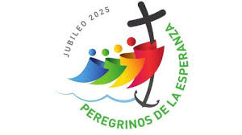

Pilgrimage to Rome
A spiritual journey to the heart of Catholicism. Open to all faithful worldwide.
Join us in celebrating faith, unity, and renewal.
The Jubilee is a special year of forgiveness, spiritual renewal, and unity. It is celebrated every 25 years in the Catholic Church, inviting believers to rediscover their faith and live it more deeply.
A spiritual journey to the heart of Catholicism. Open to all faithful worldwide.